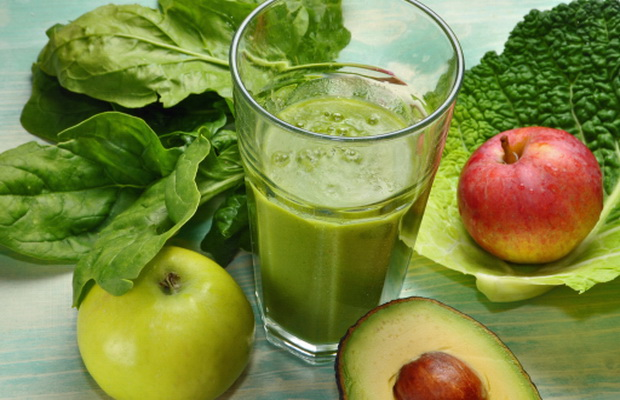

يجب أن يكون الجزء الأكبر من النظام الغذائي موزعاً على حصص من اللحوم والدواجن والأسماك والحبوب الكاملة، الخضراوات والفواكه، وكذلك المكسرات.
يمكن توزيع العصائر على عدة وجبات يومية، بحيث تتناسب مع عدد حصص الفواكه، لكن يجب الانتباه إلى كمية السكر التي تحتويها كل حصة، وكذلك إلى كمية السعرات الحرارية.
يفضل اختيار العصائر التي تتركز مكوناتها على الأصناف الخضراء، وبالمجمل فإن أكثرها يكون من الخضراوات، فهي تحتوي على كمية جيدة من الفيتامينات والمعادن والمغذيات النباتية الأساسية، ومن أهم الأمثلة على ذلك: الكرفس، الخيار، السبانخ، البقدونس، الزنجبيل مع نصف حبة من التفاح الأخضر.